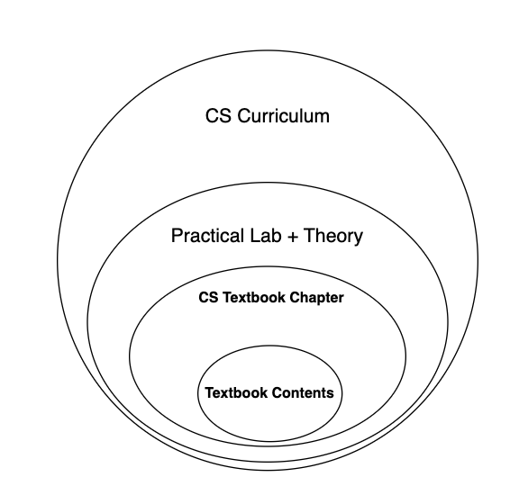
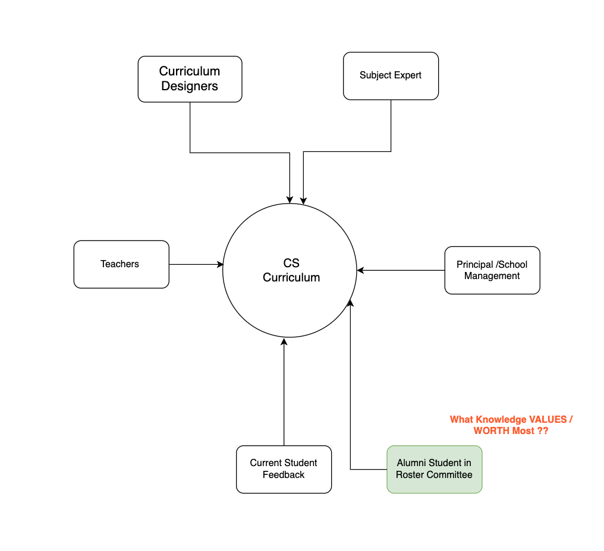
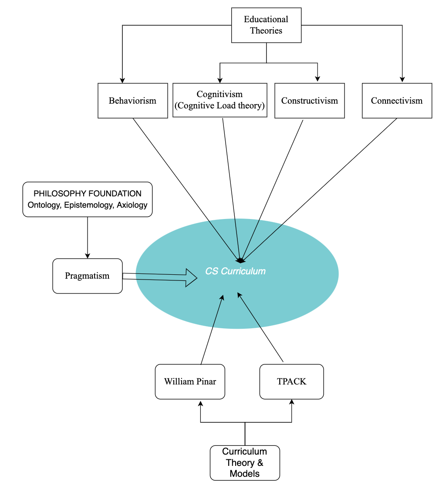
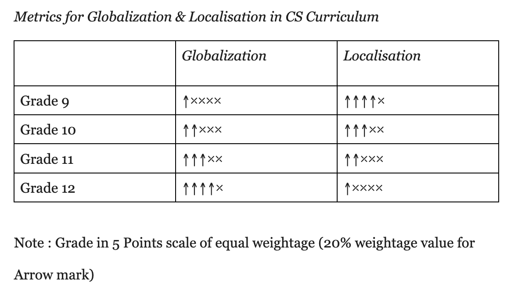

Text Book for CS
Teaching Learning Methods for Computer Science Curriculum
This figure depicts the major 2 teaching methods for CS curriculum.
the curriculum
should be composed of entitity represented on the right side of circle.

Teachers and students are the prime actors as the end users for curriculum products. Teachers and students; expectations for curriculum help to design curriculum with a more user-centered approach that would contribute to an immersive learning experience to both students and teachers.
The research findings from CS teachers, students, and several literature review
articles, I am suggesting the required attributes for the CS curriculum. The CS
curriculum should focus on computational thinking. Computation thinking can be
taught with several interdisciplinary subject examples. Grade 10 students should
know about programming in both block-based and text-based. Block-based programs
can be used to support slow learners or to understand concepts. Proficiency in text-
based programming is an actual coding skill. Debugging is a valuable skill that would
help students to explore and fix problems in programming. The words in the textbook
should be analyzed through a flesch reading score that help to judge the student's
understandable contents in the textbook. Since the world is advancing towards AI and
ML, thus data plays a valuable role in future CS technologies. Students should know
the value of data and how machines behaves intelligence through learning from data.
Graphics play a central role as the user interface's front end. Graphics contents should
be focussed at secondary school level. Learning should be fun, interactive and game
based through constructive projects. The ingredients for the CS curriculum is
mentioned in figure 8.
The circular figure represented the increase of components in equal
proportion. The inner circle represents the mandatory element for CS curriculum like
Computation thinking, flesch score.
The CS curriculum should be student-centric since students are the targeted audience for curriculum. Curriculum should be value oriented towards student life and career development. Curriculum should help students to expand knowledge and explore new learning resources in digital platforms. New generation students are the most-affected by the technologies development in their lifestyle. Thus technologies friendly curriculum would help students to utmost utilize technologies to support their life activities. Alumni students feedback should be taken for the revision of curriculum so that they know what value most as part of the CS curriculum. For the curriculum development, it is proposed to include the alumni students in the committee as depicted in figure 5.
Present Students informs about the current status of CS curriculum. Alumni student mentions about the effectiveness of CS curriculum contents.
These theories would help to teach subject well.
Behaviorism learning theory is related to memorization and understanding of theoretical contents. Behaviorism focuses on reinforcement learning with reward and punishment. Cognitivism is focussed on how well teachers can make students understand CS contents. Constructivism is focussed on students how they construct knowledge from CS curriculum and explore more on learning resources. Connectivism theory is related to student participation in blogs, forums and online learning platforms that help to explore learning and work in a team in the real-world.
This figure depicts the major 2 teaching methods for CS curriculum.
the curriculum
should be composed of entitity represented on the right side of circle.
in the rating of 5 points likert-scale
this 5point scale helps to design curriculum for Grades 9 to 12 in terms of localized and Globalized Contents materials seggregations
